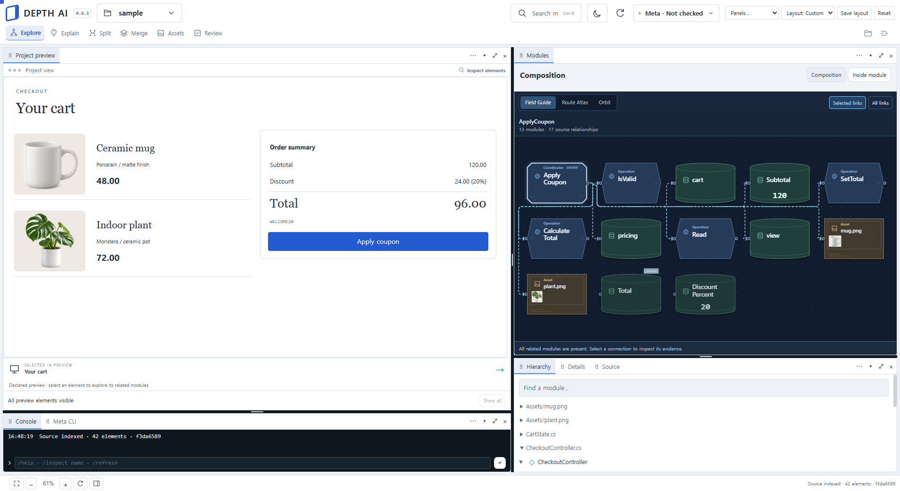
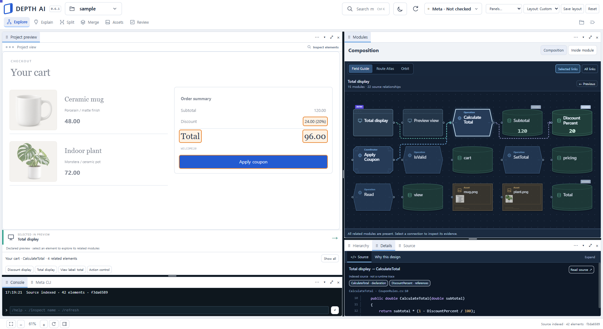
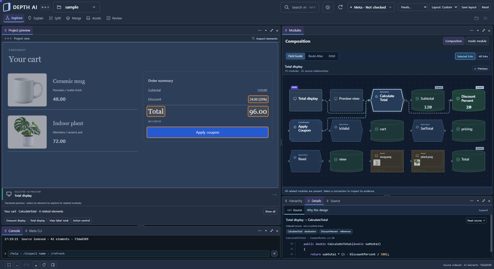
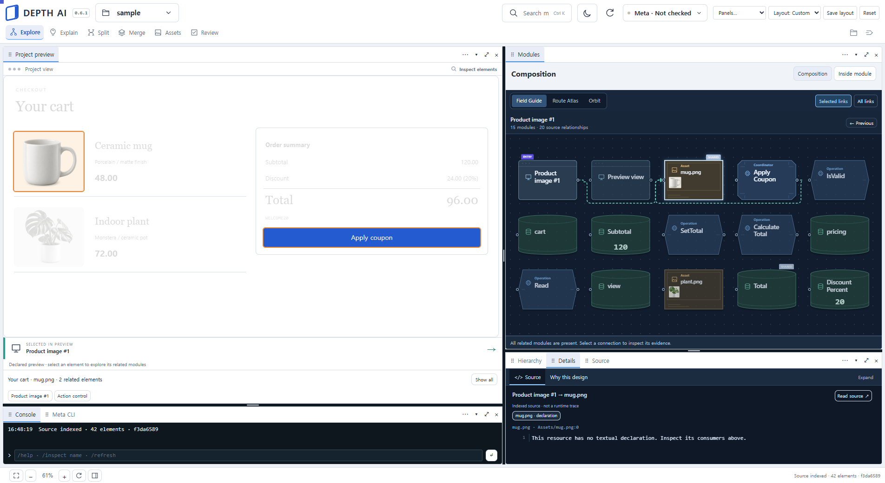
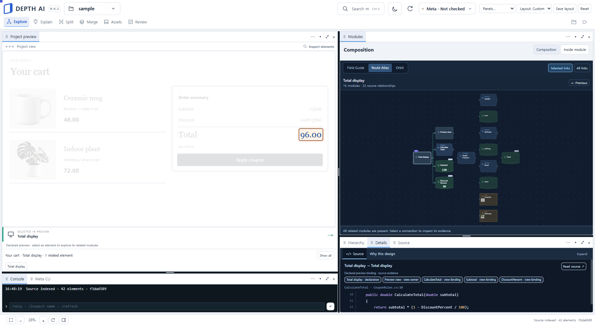
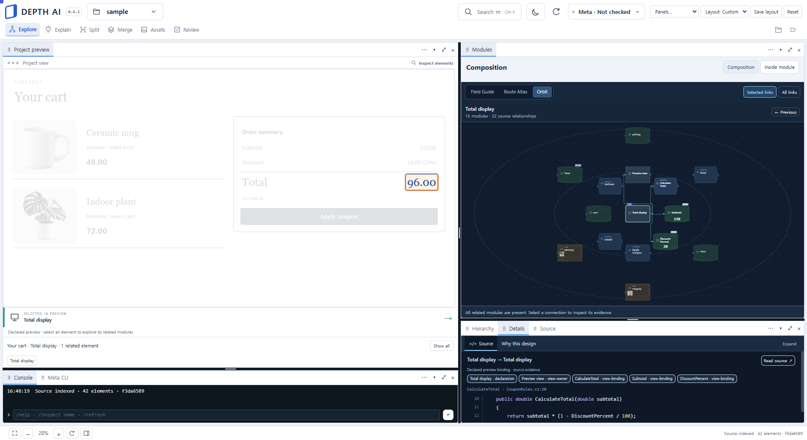
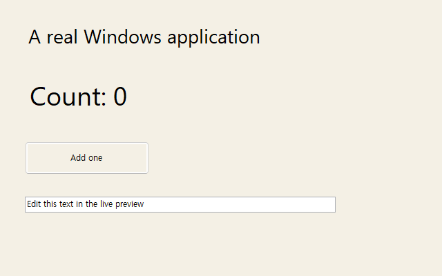
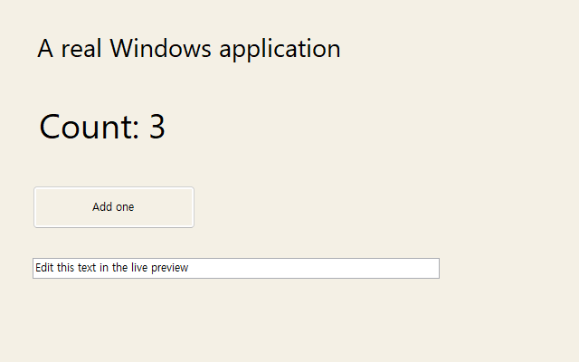

소스를 근거로 한 연결
Roslyn, TypeScript compiler, Dart analyzer에서 선언·참조·소스 위치를 추출했다. 관계를 임의의 AI 추측으로 채우지 않고, 노드 ID와 실제 소스 anchor를 유지하도록 구성했다.
Desktop developer tool · Research prototype · AI-assisted development
AI가 만든 코드도 사용자가 이해하고 수정할 수 있어야 한다. Depth AI는 실제 소스 구조, 모듈 시각화, 설명과 변경 검토를 하나의 데스크톱 작업면에 연결하려는 개발 실험이었다.
Windows / Electron.NET / AST analysisMeta integration개발 프로토타입 · 전체 미완료
CLI와 AI 도구는 많은 파일을 빠르게 만든다. 그러나 사용자가 기능 하나를 바꾸려면 어떤 파일이 그 기능을 구성하는지, 어느 모듈이 다른 모듈에 의존하는지 다시 읽어야 한다. 파일 트리만으로는 이 관계가 충분히 드러나지 않는다.
초기 목표는 화면 요소와 관련 코드를 함께 탐색하고, 모듈별 역할과 설계 이유를 읽으며, 파일 분리·프로젝트 통합을 검토 가능한 변경으로 다루는 것이었다. Unity/MR 기반 공간 인터페이스를 탐색한 뒤 Windows 데스크톱 도구로 방향을 전환했다.
Roslyn, TypeScript compiler, Dart analyzer에서 선언·참조·소스 위치를 추출했다. 관계를 임의의 AI 추측으로 채우지 않고, 노드 ID와 실제 소스 anchor를 유지하도록 구성했다.
함수·상태·에셋의 형태를 다르게 표현하고, 선택한 선언의 구성과 도달 가능한 의존성을 함께 펼쳤다. 정적 관계와 실제 실행 순서는 구분했다.
Preview, Modules, Hierarchy, Console, Meta CLI, Details, Source를 이동·분할·탭 결합·접기할 수 있는 도킹 구조로 구성했다.
Meta가 만드는 설명·변경안을 소스 ID, revision과 hash에 연결했다. 실제 파일 적용 전에 diff와 검증 상태를 보여주고 이력과 undo를 제공했다.
다음 5장 역시 같은 0.6.1 시점의 실제 앱 캡처다. 생성된 디자인 이미지가 아니다. 문맥은 선언형 예제이며, 모든 프로젝트에 대한 자동 UI 추적을 입증하지 않는다.





| 계층 | 선택한 구성 | 의도 |
|---|---|---|
| 데스크톱 | Electron / JavaScript / IPC | 파일 접근·프로세스 실행과 화면의 책임 분리 |
| 분석 서비스 | .NET 8 / C# | 프로젝트 상태, 소스 인덱스, 변경안·검증·이력 관리 |
| 언어 분석 | Roslyn / TypeScript compiler / Dart analyzer | 실제 선언·참조·위치를 근거로 탐색 |
| AI | 설정: muse-spark-1.3 / muse-image-1.0 | 의미 설명·코드 변경 제안 / PNG 생성. 직접 값 편집은 모델 호출 없이 수행 |
| 실행 연결 | 웹 호스트 / 엔진·윈도우 어댑터 | 정적 소스 인덱스와 실제 런타임 사이의 연결 실험 |
별도의 WinForms 테스트 앱에서 버튼 입력 세 번이 각각 한 번씩 처리되어 Count가 0에서 3으로 바뀌었다. 텍스트 입력과 portable PDB 기반 핸들러 위치, 소스 체크섬 불일치 거부도 검사했다.


| 항목 | 확인한 범위 | 넘어서 말할 수 없는 범위 |
|---|---|---|
| 실제 UI 캡처 | 0.6.1의 예제 바인딩·도킹·소스 탐색 | 최신 0.9.1 전체 UI와 임의 프로젝트 프리뷰 |
| WinForms 어댑터 | 독립 앱 빌드·입력·PDB 소스 연결 10개 검사 | Unity / Flutter / 모든 네이티브 프레임워크의 성공 |
| 값 편집 | 서비스 240개, 실제 서비스·UI DOM 56개, Dart 실행·undo 9개 검사 기록 | 임의 표현식·모든 타입·모든 언어의 의미 보존 |
| runtime IPC 오류 | 0.9.1에서 초기화·오류 범위 수정. 누락 재현 DOM 13개 및 메인/preload 배포 검사 13개 | 사용자 환경에서 오류가 모두 해소됐다는 확인 |
| Meta | 이전 실제 호출 기록과 현재 코드 경로가 존재 | 이번 아카이브 작업에서 새 모델 호출이나 전체 기능 검수 |
| 실제 3D 메시 | 활성 PNG 경로와 분리하여 미지원 표시 | GLB 생성 완료 |
최신 EXE 직접 실행은 Mojo IPC 접근 거부(0x5)로 새 화면을 검수하지 못했다. 내부 테스트와 실제 사용자 동작 사이에 간극이 남았고, 사용자가 실제로 오류를 보고했다. 이 프로젝트는 완성된 상용 제품으로 소개하지 않는다.
그래프와 도킹 UI를 만드는 것만으로 프로젝트를 이해하는 경험이 완성되지 않았다. 실제 런타임 연결, 언어별 분석 범위, 소스 변경의 의미 보존, 배포된 프로세스와 화면의 버전 일치가 모두 별개의 문제였다. 테스트 개수보다 사용자가 프로젝트를 열고 원하는 정보를 확인하는 전체 흐름의 검증이 중요했다.
다음 제품에서는 코드 생성·분리·통합·에셋 제작·범용 앱 실행을 동시에 확장하지 않는다. “CLI가 만든 폴더를 이해하는 읽기 전용 투명 패널”이라는 한 가지 문제로 초점을 옮긴다.
새 방향의 레퍼런스 12장포트폴리오 소개 문구